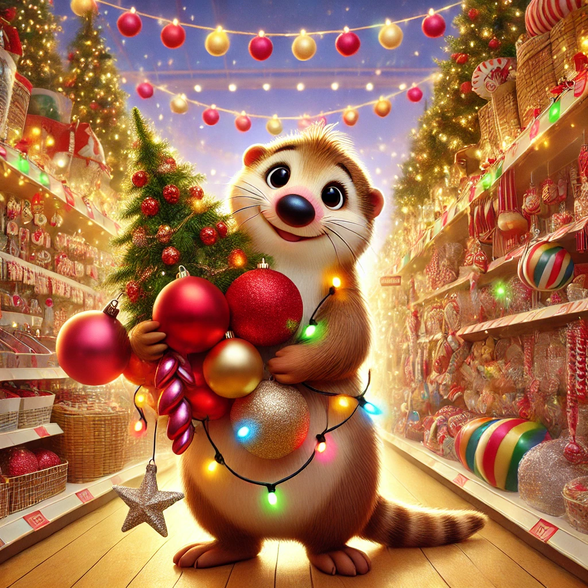
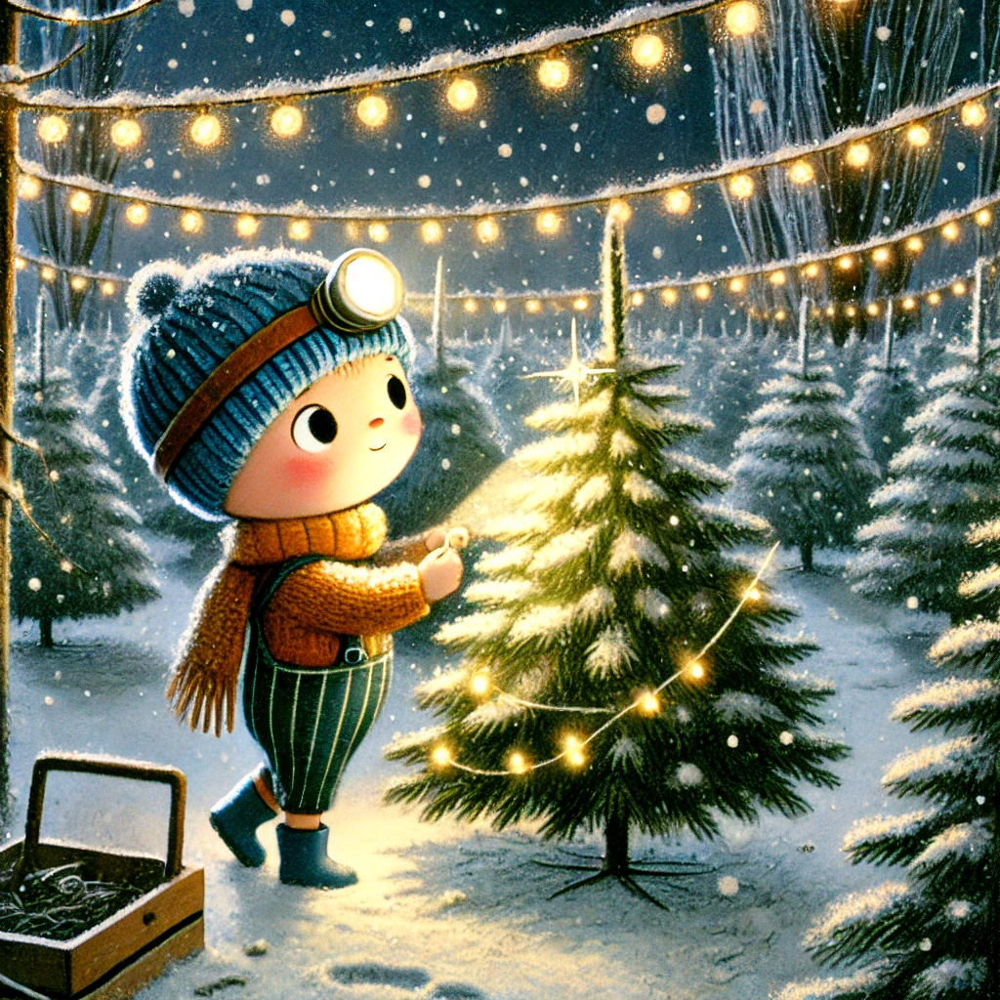
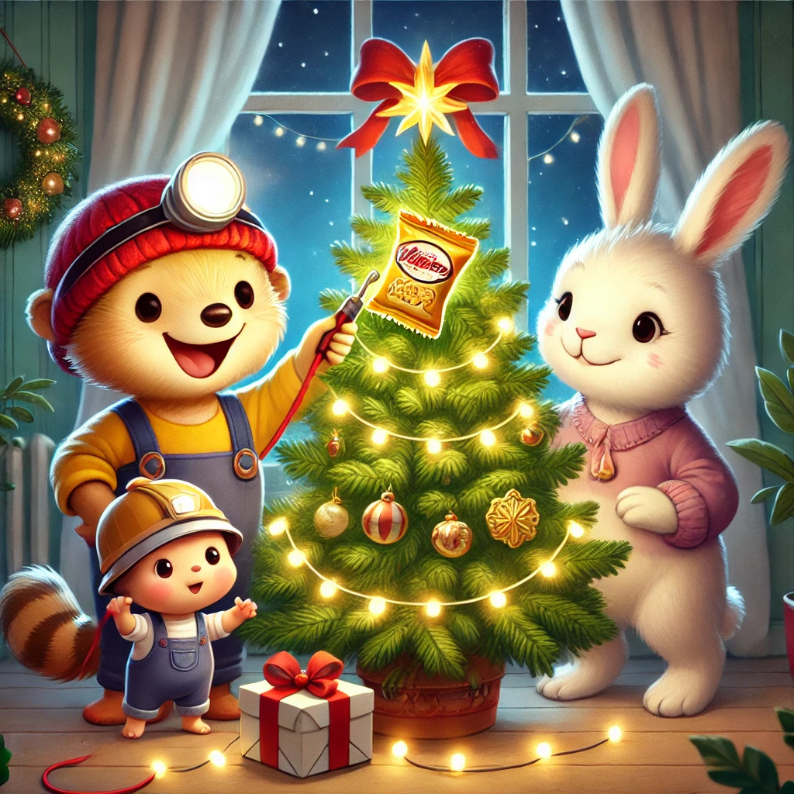

Es war einmal ein Wiesel namens Winnie, das oben auf dem Knabbereienregal eines Supermarkts in Leknes auf den Lofoten wohnte. Eines Tages kam Biep völlig außer Atem bei Winnie an. Er hatte eben seine Schicht beendet. "Weihnachtsbaum, Winnie, Weihnachtsbaum. Wir brauchen einen Weihnachtsbaum. Ich habe den ganzen Tag Barcodes für Weihnachtsbäume gescannt und da ist es mir aufgefallen: wir haben gar keinen Weihnachtsbaum!"
Winnies Gedanken flogen im Affenzahn davon: Christbaumkugeln, Ornamente, Lichterketten, Baumständer,... Sie malte sich im Geist den ersten eigenen Christbaum aus.
"Hey, Winnie, hörst du mir überhaupt zu?" Biep würde ungeduldig. "Ich höre dir zu und ich kann unseren Baum schon vor mir sehen!" Winnie hüpfte auf und ab. " Wir haben viel zu tun. Lass uns Herrn Hase abholen." Gesagt, getan. Winnie wollte alles haargenau durchplanen. So setzten sie sich zusammen und brachten ihren Traumbaum zu Papier. Der Baum war groß, hatte große rote uns goldene Kugeln. Er war über und über mit kleinen Lichtern bedeckt und es hingen große Strohsterne von den dichten Zweigen. Außerdem durfte natürlich eins nicht fehlen: die Weihnachtsgurke. Zu dritt bewunderten sie das Bild für einige Zeit. Dann übernahm Herr Hase das Sagen: "Winnie, du bist verantwortlich für die Dekoration. Biep, du suchst den Baum aus und ich überlege mir, wie wir ihn transportieren können."
Und so rannten sie in alle Himmelsrichtungen davon. Winnie fand die Deckrotation schnell: Lichterketten, Kugeln, Sterne: alles im Sonderregal für Weihnachtsartikel. Nur die Gurke konnte sie nirgends finden.
Herr Hase hatte natürlich nicht ohne Grund Biep geschickt, um den Baum zu suchen und nicht Winnie. Winnies Augen sind nicht nur beim Essen größer als ihr Magen. Sie hätte einen Baum, den nicht mal ein Laster hätte transportieren können ausgesucht. Biep hingegen suchte nach einem schönen Baum mit dichten Zweigen und einer schönen Spitze. Nicht zu groß und nicht zu klein. Und da stand er: der Traumbaum. Noch etwas nackt. Aber ja! Das war ihr Baum.
Herr Hase und Winnie trafen ein. Herr Hase hatte eine Rolle Garn im Gepäck, besichtige den Baum, nickte zufrieden und forderte die beiden anderen auf, ihm zu folgen. Sie wanderten zu den Einkaufswagen und Winnie kletterte an einem hoch und befestigte das Garn am Griff. Dann zogen sie ihn mit vereinten Kräften Richtung ihres Baums. Dort angekommen kippten sie den Baum in den Wagen und brachten ihn zu Winnies Regal. Von den verschiedenen Regalbrettern aus konnten sie den Baum prima schmücken.
"Die Gurke fehlt. Ich konnte keine finden", sagte Winnie traurig. "Hmmm", überlegte Herr Hase. "Wie wäre es mir einer Weihnachtschipstüte?" Winnie fand das sehr passend und klatschte in die Hände. Sie nahmen eine kleine Packung Chips aus dem Regal und knoteten sie mit dem Garn im Baum best. Biep steckte die Lichterkette an und die drei saßen nebeneinander auf dem Regal, ließen die Beine baumeln und staunten.
